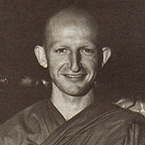

|
 |
Venerable Amaro (Jeremy Horner) was born in Kent, England
in 1956. He studied Psychology and Physiology at Bedford College, University
of London. His first spiritual interest arose on reading the works of
Rudolph Steiner. Upon completing his degree, he had the chance to travel
to Asia -- a friend offered him work as a groom on a cargo plane transporting
racehorses to Malaysia. |
|
This talk was given by the Venerable Amaro during a retreat conducted
for lay people at BEING ON A RETREAT LIKE THIS, a great sense of fellowship develops: a sense of everybody being on the same journey. Even though we come from an enormous variety of backgrounds, men and women, young and old, we are all heading for the same place. This is something we know in our hearts is true that even though we may have different names for the goal of the spiritual life, something in us knows we are all heading in the same direction. The most important thing about religious practice of any sort is that it is to be a process of awakening; it must not get trapped into being an empty ideal that we worship, instead of being a reality we open to. Many rivers of blood have been shed arguing about different names for the goal: 'The Holy City', 'Union with Brahma', 'Kismet', 'Nibbana'. As long as there have been people there have been ways of symbolising the state of peace, security and fulfilment. So, if we can avoid getting caught up with the wording of the signpost ending up hanging onto the signpost itself as long as there is the resolution to make the journey, we will arrive, regardless of the name of the destination we have used. How could the goals be different? Whether one is brought up a Christian, a Hindu or a Jew, as an English or an Asian person, how could the fundamental nature of the mind be different? How could it possibly be affected just by what we believe? Just as the nature of water is not affected by the shape of the vessel into which it is poured, so too the nature of Ultimate Truth the nationality and the conditioning of the person in whom it is realised does not affect the way it actually is. It is very important to remain determined to make the journey, to follow the signposts to awakening. The Buddha was extremely careful in the way he taught, to account for the human tendency to wander off the path. Our minds are so active and bright that we will always find some fascinating things to get involved in along the way: interesting palaces to visit, plants to investigate, people to chat with by the road. So he kept pointing out to people the crucial need to make the journey, rather than to just talk or think about it. Around any religious teaching, over the years, there seem to grow up an enormous quantity of metaphysical and philosophical ideas; rites and rituals; traditions of what to eat, how to arrange marriages and funerals; how to talk about the different qualities of our minds and the different factors that influence our lives. Although we might start off with basic symbols to represent simple truths, in time they become things we worship in themselves. The institution becomes more important than the people who comprise it, and it is forgotten what the institution, and the symbol, were actually for. We end up worshipping the signpost rather than allowing it to point out the way to us. To avoid this the Buddha kept his teaching very simple. One day he was walking through a forest with his monks; he picked up a handful of leaves and said: 'What do you think, bhikkhus, are there more leaves in my hand or more leaves in the forest?' 'The leaves in your hand are few and the leaves in the forest are many, 'they replied. 'So too, 'said the Buddha, 'the things that I know are comparable to the leaves in the forest, but that which I teach you is just as much as I hold in my hand.' All the Buddha knew in terms of how the world works, the history of the universe, the astral realms, the mechanics of nature in all its multifaceted complexity all this he laid aside. He kept his teaching simply to that which was crucial to liberation. Because of this he refrained from getting into any kind of metaphysical discussion; he would never engage in that. Whenever anyone would try to draw him on such a point 'What was the Ultimate beginning?', 'What happens to an enlightened being when he dies?' he would remain silent. He simply would not pursue it. Firstly, because these things are all unimportant, in that they do not lead directly to liberation; and secondly, to avoid compounding the wrong views of the questioner. He used a very good simile to explain this once: 'If I had a fire and put it out, and then I asked you: Where has the fire gone north, south, east or west?, what would you answer?' 'Well, it's a foolish question, because those things do not apply. It's just gone out, it hasn't gone anywhere. 'The Buddha replied: 'Exactly so the way you phrase the question assumes a particular kind of answer. So to give any answer is to go along with your mistaken view.' So he would only teach that which related directly to what a person can do in order to realise the Truth. Whenever he did talk about Ultimate Reality, he would use the most impersonal and open terms: 'It is wonderful; immanent, peaceful; the Unoriginated, Unconditioned' which do not give a great deal to grab a hold of! It is not some 'thing' one can externalise and idealise, but a quality one can open to and realise. The essence of all spiritual practice, in our human condition, is to learn to look beyond the sensory world, learn to abide beyond perception. One way that we can do this is to look upon life as something that flows through the mind. Rather than thinking of oneself as a person who is going places, consider these as images going through the mind. Right now we have the image of the meditation hall, Amaravati; this is what we can perceive. The sound of this voice; the feeling of sitting on a cushion; the sense of sight; see that all these things flow through the mind like a current. When Ajahn Sumedho went travelling recently he said he made the determination before he left that he wasn't going to go around the world, he was just going to let the world go through his mind. Afterwards he said the result was very peaceful: he went everywhere, saw everyone, did everything, but the sense of movement, of a person heading towards somewhere, was absent; there was stillness in its place. If we stop looking upon our sensory experience as being so solid and absolute, we see that there are just these perceptions, and the knowing the sense of awareness and being. This is the way that the mind is liberated, the way beyond birth and death. There was a woman staying here in January who had terminal cancer, she came to die here as a nun. This was during a monastic retreat period so we had a lot of opportunity to contemplate the dying process. One afternoon, as I was doing some walking meditation, it struck me very clearly that when you look upon your life as a succession of images that the mind is aware of, then why should that be broken by the moment of death? The body is something that is perceived in the mind so, at the moment of death, if there has been awareness of the body alive, then surely there will just be awareness of the body dead. The body dies just another perception in the mind. What that mind is attached to, where it goes, who it belongs to are all the north, south, east and west of the matter. They are questions which do not really apply. This is being with the mind that is beyond birth and death being that knowing, being Buddha. When you see a thought arising in your mind, it appears, has its life span, and then it's gone. Though the birth and death of the body are probably the most powerful experiences we have in a human life, fundamentally there is no difference between them and the perception of a thought. With meditation practice there is the development of understanding how things come out of the void and go back into the void again. The more familiar we get with this process, the more the mysteries of existence resolve themselves. So it's not as though you know the answer, in so many words, to, 'Where do I come from, where do I go?', but you don't need to put it into words. You know the mind out of which everything arises and into which everything disappears. By training yourself to just be that knowing, be that which is the source and goal of all things, you see the fear of the unknown dissolve. Death is frightening when we don't understand; but the more one knows the mind, the more it' s no longer the unknown. There is no more fear because you realise, with the death of the body, what is there fundamentally different that could happen? How could it not just be another thing that comes into the mind, that we bear with and then see vanish? Since we know the mind before and after things have been born into it, we know there is nothing to be frightened of. In order to be able to deal with life this way we have to develop an undiscriminating attitude, welcoming everything that we experience. Welcoming the pleasant is very easy; pleasure is what we like. But there are unpleasant qualities that keep arising too: feelings of irritation and pride, desire, one's inability to be a perfect human being welcoming all of that is a different story, isn't it? I remember talking with Ajahn Sumedho one day about the practice of loving-kindness. 'It' s those foolish and petty, childish emotional reactions I find hard to deal with. 'Right,' he replied, 'but notice the way we describe them petty, foolish, childish does that sound to you like metta? Does that set things up for you to accept life wholeheartedly? Or does it show that you have already prejudged the whole experience? Because that' s what I used to do. You have to welcome it all sincerely.' As I began to apply this advice I realised how much of my time had been trying to fend off all those little imps and demons. All those wavelets of desire, fear and discomfort; subtle feelings that had never been very clear. Every time anything arose which brought a dismissive reaction up in my mind, I would say, very carefully and deliberately: 'Oh, jealousy, how nice of you to come! Have a seat. Pride! Hello... cup of tea?' The effect on my mind was astonishing. I realised how much of a problem I had been making out of my life so much judging and choosing over what I wanted to arise in my thoughts. I realised also that every time I reacted negatively, pushing things away, that action implied that there was something to fear. That this feeling or this thought was dangerous; that it was going to really hurt me, or invade me; that it was something that was really me and mine. As I began to welcome it all I realised that when you accept everything, only then can you sense that, after all, there is nothing to fear. None of it really belongs to a self or comes from a self. It cannot touch the mind which knows, cannot affect its nature. Whatever shape of vessel you pour the water into, with this same total accommodation, the water changes to the shape of the bottle. It doesn't say: 'I will not be poured into a square bottle, square bottles are not my scene. Round bottles only, please!' To push away or grasp a hold of the beautiful and the ugly, the noble and the sordid, is just as absurd really, isn't it? When there is complete acceptance, there is just the sense of being the knowing, being that which is aware of all that comes through the mind. This is what the image of the Buddha at the moment of enlightenment symbolises one often sees pictures of the Buddha sitting under the Bodhi tree, with an aura of light around him. Very still. Awake. And all about him there is every kind of alluring, terrifying, heart-rending form imaginable the hordes of Mara. Despite all his efforts, however, Mara fails to move the Buddha, and this is the moment of the Buddha's enlightenment. He knew: the beautiful, the terrifying, the sense of duty all of these were just images in the mind. There is nothing one can grasp, there is nothing to fear, none of it can really touch the mind. Now this is a symbol, and whether or not the incident occurred exactly as it is described is not as important as what it symbolises. For one who practises the teaching, what 'Buddha' means in our lives is more important than whether the Buddha Gotama actually lived, taught and did all the things he is said to have done. 'Buddha' is that awakened nature of the mind, the heart of the mind. That in you which is wise, which knows, which is clear and bright. And that is what the Buddha on the night of his enlightenment represents that knowing. All the hordes of Mara these are just the thoughts and feelings, hopes and fears, memories, pleasures and pains of daily activity. These may not be as grand as the alluring daughters, the terrifying demons or the tears of old King Suddhodana getting the children to school, trying to please the boss, brushing your teeth but for us these are the hordes of Mara. The images of daily life come pouring through the mind but, if we are awake, we can see that none of it affects the mind' s true nature that sense of stillness, knowing, spaciousness and clarity which the Buddha represents. Most of the time, however, we find ourselves moving away from that point. That's our habitual reaction to the world grasping after things or running away from things. I remember, when I was a very small child, often trying to jump into the middle of my shadow, but however hard I jumped I just landed on the shadows feet. And I would run after my shadow and then jump but where would I land up? Just in the same place all over again. And this is what we do with our lives the things that we desire, it' s like running after shadows. You try to catch hold, reaching for the desire so close, so close, and then you grasp it and then... and you haven't really got it. Somehow it's not what you expected, it's different, not what you really wanted. And then to run from your shadow to be afraid, you keep turning around: 'It's still behind me, run faster, got to get away. 'When we stop and look though, we realise: 'Well, it's just my shadow. 'You can't get away from it, but there's nothing in it to be afraid of, it's just a shadow. So when we stop and rest in the stillness of knowing, we know in our hearts that all we desire, all we fear, are just shadows. There is no substance there nothing which can make us more complete and nothing which can threaten us. This is the real freedom of mind. So being Buddha, being that still, aware, noble being, is both the goal and the practice that we follow the goal of the practice and the substance of the practice are the same. The religious path is thus one of simply learning to rest in being that Knowing, being Buddha, awake and aware. |
| Home Page |